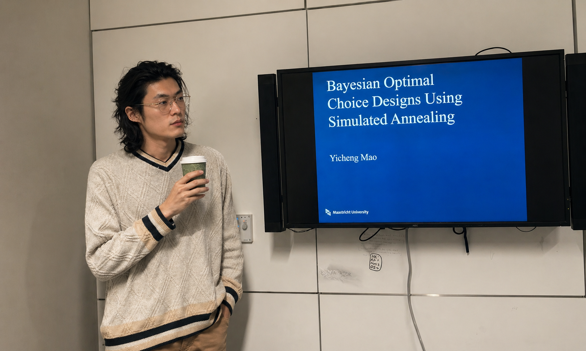
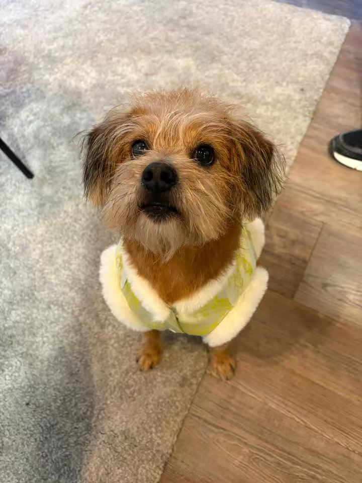

What I work on.
My research develops computational statistical methods for infectious disease and public health systems, where transmission dynamics, human behaviour, and surveillance processes interact. I focus on how statistical methods can support reliable inference, prediction, and data collection when the underlying system is nonlinear, partially observed, behaviourally adaptive, and computationally difficult to evaluate.
My current work spans four connected themes.

Bayesian epidemic modelling
Inferring how diseases spread when behaviour adapts and data are partial.
Disease forecasting and AI-assisted modelling
Using machine learning and mechanistic models to forecast outbreaks and capture human behaviour during them.
Bayesian optimal experimental design
Designing experiments that learn the most from limited data when models are nonlinear and prior knowledge is uncertain.
Statistics for social and behavioural sciences
Applying choice experiments across applied domains to study how people decide between alternative tools, services, and policies.

Where I have been.
Selected work.
Published
- Identifying memory mechanisms in Bayesian models of behavioural change during epidemics. Epidemics, 56, 100927 (2026). DOI
- Memory mechanisms for behavioural change in Bayesian individual-level spatial epidemic models. Infectious Disease Modelling, 11(4), 1536–1553 (2026). DOI
- Constructing Bayesian optimal designs for discrete choice experiments by simulated annealing. Journal of Choice Modelling, 55, 100551 (2025). DOI
- Optimal designs for mixture choice experiments by simulated annealing. Chemometrics and Intelligent Laboratory Systems, 257, 105305 (2025). DOI
- Beyond randomization: design and analysis of discrete choice experiments in the presence of profile order effects within choice sets. Applied Stochastic Models in Business and Industry, 41(5), e70043 (2025). DOI
Submitted
- Between the lines: understanding employee preferences for AI usage guidelines through discrete choice experiments. International Journal of Human–Computer Interaction Revision requested
- What drives employees' choices in AI training: modeling employees' preferences for AI training via a discrete choice experiment. Human Resource Development Quarterly Revision requested
- Subtype dynamics reveal horizon-dependent structure in influenza predictability. Journal of the Royal Society Interface Submitted Preprint
- Simulated annealing for model-robust partial profile choice designs with simultaneous optimization. Statistics in Medicine Submitted arXiv
- Neural posterior estimation for spatial individual-level epidemic models. PLOS Computational Biology Submitted arXiv
- Data mixing as mixture experiment: response surface methodology and optimal design for large language model pretraining. RSS: Data Science and Artificial Intelligence Submitted
- Choosing the future of learning: assessing preferences for educational GPTs through a discrete choice experiment. Computers & Education: Artificial Intelligence Submitted
- Let's chat about chatbots: exploring user preferences for e-commerce customer service chatbots through a discrete choice experiment. Behavior & Information Technology Submitted
- Coding their choices: assessing student preferences for statistical software through a discrete choice experiment. Journal of Computing in Higher Education Submitted
Learning by playing.
I like teaching statistics through small, playable games. Abstract ideas like sampling variability or convergence become intuitive once you can watch them unfold and poke at them yourself, so I build little interactive demos that let students experiment with a concept before we formalize it.
Here are some I have made. More on the way.
Courses
- R Functions and Libraries (EBS1009), Maastricht UniversityInstructor
- Writing a Master's Thesis Proposal (EBS4047), Maastricht UniversityInstructor
- Research Methodology, Beijing Normal UniversityGuest Instructor
Workshops
- Introduction to Discrete Choice Experiments, Maastricht UniversityInstructor
Master thesis supervision
Supervised at Maastricht University:
Thesis committee member for:
Qualification
- Certificate in Problem-based Learning (PBL) and Tutor TrainingMaastricht, 2024